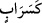
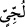
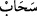

Bu âyet, önceki âyette geçen “
” ifâdesine atfedilmiştir. “ ” edâtı onların amelleri
iyi ise serâba, kötü ise karanlıklara benzetildiğini ifâde etmek içindir.
“
” derin ve suyu çok demektir. Deniz suyunun çoğu bu şekildedir.
Kâşifî der ki: “Derin bir denizde ki an be an (onu dalga üstüne dalga kaplıyor)”
“(Öyle bir deniz) ki, onu dalga üstüne dalga kaplıyor;” Bu ifâde denizin ikinci
sıfatıdır. Onu birbiri üstüne gelmiş dalgalar bütünüyle kaplayıp örtüyor, demektir.
“Üstünde de bulut...” “
” kelimesinin asıl anlamı çekmektir. Bulutun “
” diye
isimlendirilmesi, ya rüzgârın çekmesi ya da kendisinin suyu çekip götürmesi
sebebiyledir. Yani, üstteki ikinci dalganın üstünde yıldızları örten ve onların ışıklarına
perde olan bir bulut vardır. Bu ifâdede dalgaların, son derece birbirine girdiklerine, kat
kat olduklarına ve sanki bu şekilde bulutlara kadar yükseldiklerine işâret vardır.
“Birbiri üstüne karanlıklar…” Yâni bu karanlıklar yoğun bir şekilde üst üste birikip
toplanmıştır. “İnsan” yâni bu karanlıklar içinde kalan kimse “elini çıkarıp uzatsa,
neredeyse onu dahi göremez.”
“Bu karanlıklar içinde kalan kimse” ifâdesi, mânânın kendisine açıkça delâleti
sebebiyle isim olarak değil de zamir olarak zikredilmiştir.
El, kişinin görebileceği en yakın uzvudur. Karanlıklar içerisinde kalan kişi,
görebileceği en yakın uzuv olan elini, görmek için gözünün yakınına getirse de
karanlığın şiddetinden onu görmeyi bırak, görmeye yaklaşamaz bile.
“Allah bir kimseye nûr vermemişse,” Allah bir kimseyi Kur’an nûruna eriştirmeyi
dilemediyse ve Kur’an’a îmâna muvaffak kılmadıysa “artık o kimsenin nûru yoktur.”
Hiçbir kimseden asla bir hidâyet elde edemez.
Kâşifî der ki: “Bu diğer bir temsildir. Kâfirlerin amelleri karanlıklara, “engin deniz”
de kâfirin kalbine benzetilir. “Dalga”dan murâd, kâfirlerin kalbini örten cehâlet ve
şirktir. “Bulut” ile kasdedilen kâfirlerin kalbi üzerine zelillik mührünün vurulmasıdır.
Öyle ise kâfirlerin amelleri ve sözleri zulmet, dünyaya gelmeleri ve ayrılmaları zulmet,
kezâ kıyâmet gününe dönüşleri de zulmet olacaktır. Aksine mü’min nurdur. Kâfirler için
ise “Birbiri üstüne karanlıklar” denmiştir.”
Müminler karanlıktan uzaktır
Bu yüzden “nûrun alâ nûr” olmuşlardır
Gönlü karanlık olan kâfir, şek ve şüphe içindedir
O Kâfirin hâli ve işi, zulmet içinde zulmettir
Âyette geçen “karanlıklar” ile kalp huzûru ve hâlis bir niyet olmaksızın gafletle
yapılan amellerin sûretine işâret edilmiştir. “Yahut” onlar “engin bir denizdeki yoğun
karanlıklar gibidir.” Bu engin deniz, dünya sevgisidir. “(Öyle bir deniz) ki, onu dalga
üstüne dalga” riyâ, makam sevgisi ve baş olma sevdası “kaplıyor; üstünde de
bulut...” gizli şirk bulutu... “Birbiri üstüne karanlıklar...” yâni tabiatın gaflet karanlığı,